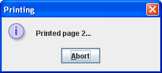
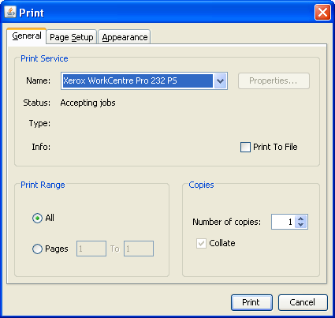
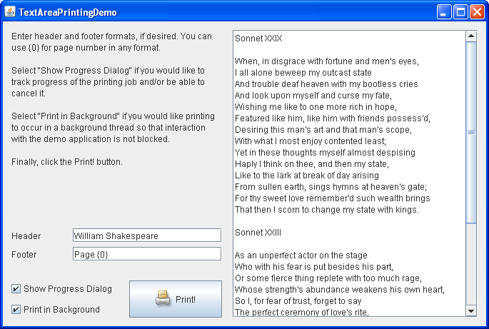
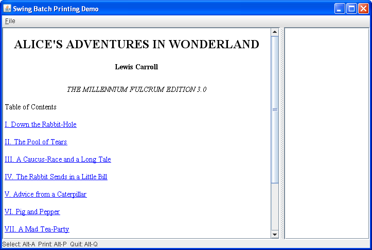

Lección: Usando Otras Características de Swing
Cómo Imprimir Texto
La clase JTextComponent proporciona soporte para imprimir el texto de los documentos. La IPA de
JTextComponent incluye métodos que le permiten implementar tareas de impresión tanto básicas como
avanzadas. Los formatos soportados incluyen HTML, RTF, y texto plano. Para las tareas de impresión comunes tales
como simplemente imprimir el texto de un documento, use el método print directamente. El método
print tiene varias formas con varios conjuntos de argumentos. Este método prepara el texto de su
documento, obtiene el objeto Printable correspondiente, y lo envía a la impresora.
Si la implementación por defecto del objeto Printable no coincide con sus necesidades, puede
personalizar el diseño de impresión sobreescribiendo el método getPrintable para envolver el
Printable por defecto o incluso reemplazarlo por completo.
La forma más fácil de imprimir su componente de texto es llamar al método print sin parámetros.
Vea el código de ejemplo de abajo.
try {
boolean complete = textComponent.print();
if (complete) {
/* muestra un mensaje de éxito */
...
} else {
/* muestra un mensaje indicando que la impresión se canceló */
...
}
} catch (PrinterException pe) {
/* La impresión fallo, informar al usuario */
...
}
Cuando llama al método print sin parámetros, un diálogo de impresión se muestra, y entonces su
componentes de texto es impreso interactivamente sin una cabecera o un pie. El ejemplo de código de abajo
muestra la firma del método print con el conjunto completo de argumentos.
boolean complete = textComponent.print(MessageFormat headerFormat,
MessageFormat footerFormat,
boolean showPrintDialog,
PrintService service
PrintRequestAttributeSet attributes,
boolean interactive);
Cuando llama al método print con todos los argumentos, explícitamente elije las características de
impresión tales como el texto de la cabecera y el pie, los atributos de impresión, un servicio de destino de
impresión, y también si mostrar un diálogo de impresión o no, y si imprimir interactivamente o no
interactivamente. Para decidir qué parámetros se ajustan mejor a sus necesidades, vea la descripción de las
características disponibles abajo.
La IPA de impresión del JTextComponent proporciona las siguientes características:
- Imprimir Interactivamente o No-interactivamente
- Visualizar un Diálogo de Impresión
- Añadir una Cabecera o un Pie (o Ambos) al diseño de Impresión
- Diseño Automático y Paginación
Imprimir Interactivamente o No-interactivamente
En el modo interactivo un diálogo de progreso con una opción para abortar se muestra durante la impresión. Aquí tiene un ejemplo del diálogo de progreso.

Este diálogo permite al usuario realizar el seguimiento del progreso de impresión. El diálgo de progreso es
modal cuando el método print es llamado desde el hilo despachador de eventos y no modal de otra
forma. Es importante que su documento permanezca sin cambios mientras está siendo impreso, de otra forma el
comportamiento de la impresión no estará definido. El método print se asegura que su documento no
se cambiará y deshabilita el componente durante la impresión.
Si llama al método print en el hilo despachador de eventos en modo no interactivo, entonces todos
los eventos incluyendo los repintados serán bloqueados. Eso es porque la impresión no interactiva usando el
hilo despachador de eventos sólo está recomendada para aplicaciones con IGUs no visibles.
Diálogo de Impresión
Puede visualizar un diálogo de impresión estándar que permite al usuario hacer lo siguiente:
- Seleccionar una impresora
- Especificar numero de copias
- Cambiar los atributos de impresión
- Cancelar la impresión antes de que se haya iniciado
- Iniciar la impresión

Puede notar que el diálogo de impresión no especifica el número total de páginas en la impresión. Esto es
porque la implementación de impresión del texto usa la IPA Printable y el número total de páginas
no es conocido antes de imprimir.
Añadir una Cabecera o un Pie (o Ambos) al diseño de Impresión
Las cabeceras y pies son suministrados por los parámetros
MessageFormat
. Estos parámetros permiten que la cabecera y el pie sean localizados. Lea la documentación para la clase
MessageFormat
como caracteres como las comillas simples son especiales y necesitan ser evitadas. Tanto las cabeceras como los
pies se centran. Puede insertar un número de página usando {0}.
MessageFormat footer = new MessageFormat("Page - {0}");
Ya que el número total de páginas en la salida no es conocido antes de la impresión, no hay forma de especificar un formato de numeración como "Página 1 de 5".
Diseño Automático y Paginación
Con el uso de la IPA de impresión de JTextComponent no necesita cuidarse del
diseño y de la paginación. Tanto el diseño cmo la paginación se hacen automáticamente. El contenido del
documento es formateado para que encaje en el tamaño de la página y lo expande a través de múltiples páginas.
Sólo necesita especificar un formato de texto apropiado para el pie al método print si quiere
insertar un número de página en el pie. Como se demostró más temprano, puede especificar el número de página en
su pie incluyendo "{0}" en la cadena que se pasa al parámetro del pie
MessageFormat. En la salida impresa, {0} será reemplazado por el número de página actual.
Ejemplo de Área de Impresión de Texto
Veamos un ejemplo llamado TextAreaPrintingDemo. La característica principal
de esta demo es imprimir el texto de un documento o sobre el hilo despachador de eventos o en un hilo en
segundo plano dependiendo de la elección del usuario. Esta demo muestra un área de texto, permite seleccionar
varias características de impresión, e imprime el contenido del área de texto de acuerdo a las opciones
seleccionadas. El código entero para este programa puede ser encontrado en
TextAreaPrintingDemo.java
. El IGU complejo de esta demos fue construido en el
diseñador de IGUs del EID NetBeans . Aquí tiene una imagen de la aplicación
TextAreaPrintingDemo.

Pruebe esto:
-
Pulse el botón Lanzar para ejecutar TextAreaPrintingDemo usando
Java™ Web Start (
descargue KDJ 7 o posterior
). Alternativamente, para compilar y ejecutar el ejemplo usted mismo, consulte el
índice de ejemplos.

- Edite el texto en las casillas de verificación de ka Cabecera o del Pie o ambas para suministrar una cabecera o pie diferente.
- Desactive la casilla de verificación Mostrar el Diálogo de Progreso si quiere imprimir sin mostrar un diálogo de progreso, lo cual significa imprimir de forma no interactiva. Note que no será capaz de cancelar la impresión una vez ha sido iniciada.
- Desactive la casilla de verificación Imprimir en Segundo Plano para seleccionar la impresión en el hilo despachador de eventos (HDE). Note que imprimir en el HDE no interactivamente hará que su aplicación no responda — la interacción con su aplicación será bloqueda mientras dure el proceso de impresión.
- Pulse el botón Imprimir para imprimir el contenido del área de texto de acuerdo a las opciones seleccionadas.
Cada vez que una aplicación lanzada en la web intenta imprimir, Java Web Start abre un diálogo de seguridad pidiendo al usuario permiso para imprimir a menos que este permiso ya haya sido otorgado en la configuración del sistema. Para proceder con la impresión el usuario tiene que aceptar la petición.
Un oyente de acción se registra para el botón Imprimir. Cuando el usuario hace clic en el botón Imprimir
el método actionPerformed llama al método print, lo cual inicia una tarea de
impresión. La tarea de impresión es un objeto de SwingWorker. El código de ejemplo de abajo
muestra cómo la clase PrintingTask es implementada.
private class PrintingTask extends SwingWorker<Object, Object> {
private final MessageFormat headerFormat;
private final MessageFormat footerFormat;
private final boolean interactive;
private volatile boolean complete = false;
private volatile String message;
public PrintingTask(MessageFormat header, MessageFormat footer,
boolean interactive) {
this.headerFormat = header;
this.footerFormat = footer;
this.interactive = interactive;
}
@Override
protected Object doInBackground() {
try {
complete = text.print(headerFormat, footerFormat,
true, null, null, interactive);
message = "Impresión " + (complete ? "completa" : "cancelada");
} catch (PrinterException ex) {
message = "Lo siento, ocurrió un error de impresora";
} catch (SecurityException ex) {
message =
"Lo siento, no puedo acceder a la impresora debido a razones de seguridad";
}
return null;
}
@Override
protected void done() {
message(!complete, message);
}
}
El código de ejemplo de abajo muestra còmo el método print obtiene el conjunto de opciones
seleccionads desde los componentes del IGU, después crea una instancia de la clase
PrintingTask, y realiza la impresión.
private void print(java.awt.event.ActionEvent evt) {
MessageFormat header = createFormat(headerField);
MessageFormat footer = createFormat(footerField);
boolean interactive = interactiveCheck.isSelected();
boolean background = backgroundCheck.isSelected();
PrintingTask task = new PrintingTask(header, footer, interactive);
if (background) {
task.execute();
} else {
task.run()
}
}
El código en negrita ilustra cómo los métodos de PrintingTask son invocados dependiendo del
valor del parámetro background. Siempre que el usuario prefiera imprimir en un hilo en segundo
lano, el método execute es llamado, el cual planifica la tarea de impresión para la ejecución
sobre un hilo en segundo plano. De lo contrario, el método run realiza la tarea de impresión
en el HDE.
Ya que la impresión de grandes documentos es una tarea que consume tiempo, se recomienda realizar la impresión en un hilo en segundo plano.
Ejemplo de Impresión por Lotes de Texto
El ejemplo TextBatchPrintingDemo ilustra la impresión de documentos de
texto HTML no visibles en hilos en segundo plano. Cuando se lanza, esta demo visualizar una página con una
lista de URLs. Puede visitar una página HTML, añadir la página visualizada a la lista de impresión, y una vez
selecciona todas las páginas que necesita, puede imprimr todas ellas de una vez en hilos en segundo plano. El
código entero para este programa se encuentra en
TextBatchPrintingDemo.java
. Aquí tiene una imagen de la aplicación TextBatchPrintingDemo.

Pruebe esto:
-
Pulse el botón Lanzar para ejecutar TextBatchPrintingDemo usando
Java™ Web Start
(descargue KDJ 7 o
posterior). Alternativamente, para compilar y ejecutar el ejemplo usted mismo, consulte el
índice de ejemplos.
- Pulse en cualquier enlace para ver la página HTML correspondiente.
- Presione Alt+A o elija el elemento de menú Fichero > Añadir Página para añadir la página visualizada a la lista de impresión mostrada en la derecha.
- Presione ALT+H o elija el elemento de menú Fichero > Pagina Inicio para volver a la página inicial de la demo.
- Añada tantas páginas a la lista de impresión como necesite.
- Presione ALT+C o elija el elemento de menú Fichero > Borrar lo Seleccionado si necesita borrar la lista de impresión y construirla de nuevo.
- Presione ALT+P o elija el elemento de menú Fichero > Imprimir lo Seleccionado para imprimir las páginas seleccionadas.
- Presione ALT+Q o elija el elemento de menú Fichero > Abandonar para abandonar la aplicación.
Puede buscar el código de impresión en el método printSelectedPages. Cuando es llamado, este
método primero obtiene la cantidad de páginas seleccionadas para imprimir. El ejemplo de código de abajo
muestra cómo el método printSelectedPages crea un objeto Runnable para cada página y
entonces imprime la página actual en un hilo separado.
for (int i = 0; i < n; i++) {
final PageItem item = (PageItem) pages.getElementAt(i);
// Este método es llamado desde el HDE. Imprimir es una tarea
// que consume tiempo, así que debería ser hecha fuera del HDE, en un hilo separado.
Runnable printTask = new Runnable() {
public void run() {
try {
item.print(
// Dos argumentos "false" significan "sin díalogo de impresión" y
// "no interactivo" (por ejemplo, impresión por lotes).
null, null, false, printService, null, false);
} catch (PrinterException pe) {
JOptionPane.showMessageDialog(null,
"Error imprimiendo " + item.getPage() + "\n" + pe,
"Error de Impresion", JOptionPane.WARNING_MESSAGE);
}
}
};
new Thread(printTask).start();
La IPA de Impresión de Texto
Esta sección lista métodos definidos en la clase JTextComponent que le permite imprimir documentos
de texto.
| Método | Propósito |
|---|---|
|
boolean print()
boolean print(MessageFormat, MessageFormat) boolean print(MessageFormat, MessageFormat, boolean, PrintRequestAttributeSet, boolean, PrintService) |
Cuando es llamado sin argumentos, muestra un diálogo de impresión, y entonces imprime este componente
de texto interactivamente sin texto para la cabecera o pie. Devuelve true si el usuario
continuó imprimiendo y false si el usuario canceló la impresión.
Cuando es llamado con los dos argumentos MessageFormat, muestra un diálogo de impresión, y
entonces imprime este componente de texto interactivamente con el texto especificado para la cabecera y
el pie.
Cuando es llamado con un conjunto completo de argumentos, imprime este componente de texto de acuerdo a los argumentos especificados. Los dos argumentos MessageFormat especifican el texto de la
cabecera y pie. El primer argumento booleano define si mostrar un diálogo de impresión o no. El otro
argumento booleano especifica si imprimir interactivamente o no. Con los otros dos argumentos puede
especificar los atributos de impresión y un servicio de impresión.
Siempre que se omita un argumento PrintService, se usará la impresora predeterminada.
|
| Printable getPrintable(MessageFormat, MessageFormat) |
Devuelve un objeto Printable para imprimir su componente de texto. Sobreescriba este
método para obtener un objeto Printable personalizado. Puede envolver un objeto Printable dentro de
otro con el fin de obtener informes complejos y documentos.
|
Ejemplos Que Usan Impresión de Texto
Esta tabla lista ejemplos que usan impresión de texto y señalan dónde estos ejemplos se describen.
| Ejemplo | Dónde Se Describe | Notas |
|---|---|---|
TextAreaPrintingDemo
|
Esta página | Demuestra los fundamentos de la impresión de texto y proporciona un IGU complejo. Permite al usuario especificar el texto de la cabecera o el pie, activar o desactivar el diálogo de impresión, seleccionar la impresión interactiva o no interactiva, y entonces imprimir según las opciones seleccionadas. |
TextBatchPrintingDemo
|
Esta página | Esta demo muestra un componente de texto con una lista de URLs, permitiendo al usuario ver las páginas HTML, añadirlas a la lista de impresión, e imprimit todas las páginas seleccionadas de una vez en hilos en segundo plano. |